Using spatio-temporal neighbor data information to detect changes in land use and land cover¶
Shanci Li (Uzufly) - Alessandro Cerioni (Canton of Geneva) - Clotilde Marmy (ExoLabs) - Roxane Pott (swisstopo)
Proposed by the Swiss Federal Statistical Office - PROJ-LANDSTATS
September 2022 to March 2023 - Published on April 2023
All scripts are available on GitHub.
Abstract: From 2020 on, the Swiss Federal Statistical Office started to update the land use/cover statistics over Switzerland for the fifth time. To help and lessen the heavy workload of the interpretation process, partially or fully automated approaches are being considered. The goal of this project was to evaluate the role of spatio-temporal neighbors in predicting class changes between two periods for each survey sample point.
The methodolgy focused on change detection, by finding as many unchanged tiles as possible and miss as few changed tiles as possible. Logistic regression was used to assess the contribution of spatial and temporal neighbors to the change detection. While time deactivation and less-neighbors have a 0.2% decrease on the balanced accuracy, the space deactivation causes 1% decrease. Furthermore, XGBoost, random forest (RF), fully convolutional network (FCN) and recurrent convolutional neural network (RCNN) performance are compared by the means of a custom metric, established with the help of the interpretation team. For the spatial-temporal module, FCN outperforms all the models with a value of 0.259 for the custom metric, whereas the logistic regression indicates a custom metrics of 0.249.
Then, FCN and RF are tested to combine the best performing model with the model trained by OFS on image data only. When using temporal-spatial neighors and image data as inputs, the final integration module achieves 0.438 in custom metric, against 0.374 when only the the image data is used.
It was conclude that temporal-spatial neighbors showed that they could light the process of tile interpretation.
1. Introduction¶
The introduction presents the background and the objectives of the projects, but also introduces the input data and its specific features.
1.1 Background¶
Since 1979, the Swiss Federal Statistical Office (FSO) provides detailed and accurate information on the state and evolution of the land use and the land cover in Switzerland. It is a crucial tool for long-term spatial observation. With these statistics, it is possible to determine whether and to what extent changes in land cover and land use are consistent with the goals of Swiss spatial development policies (FSO).
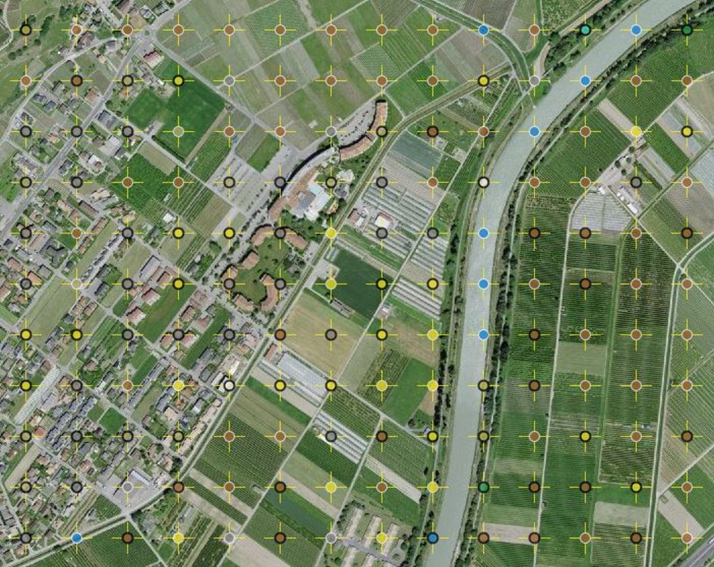
Figure 1: Visualization of the land cover and land use classification.
Every few years, the FSO carries out a survey on aerial or satellite images all over Switzerland. A grid with sample points spaced 100 meters apart overlays the images, providing 4.1 million sample points on which the statistics are based. The classification of the hectare tile is assigned on the center dot, as shown in Figure 1. Currently, a time series of four surveys is accessible, based on aerial images captured in the following years:
- 1979–1985 (1st survey, 1985)
- 1992–1997 (2nd survey, 1997)
- 2004–2009 (3rd survey, 2009)
- 2013–2018 (4th survey, 2018)
The first two surveys of the land statistics in 1979 and 1992 were made by visual interpretation of aerial analogue photos using stereoscopes. Since the 2004 survey, the methodology was deeply renewed, in particular through the use of digital aerial photographs, which are observed stereoscopically on workstations using specific photogrammetry software.
A new nomenclature (2004 NOAS04) has also been introduced in 2004 which systematically distinguishes 46 land use categories and 27 land cover categories. A numerical label from this catalogue is assigned to each point by a team of trained interpreters. The 1979 and 1992 surveys have been revised according to the nomenclature NOAS04, so that all readings (1979, 1992, 2004, 2013) are comparable. On this page you will find the geodata of the Land Use Statistics at the hectare level since 1979, as well as documentation on the data and the methodology used to produce these data. Detailed information on basic categories and principal domains can be found in Appendix 1.
1.2 Objectives¶
It is known that manual interpretation work is time-consuming and expensive. However, in a feasibility study, the machine learning technique showed great potential capacity to help speed up the interpretation, especially with deep learning algorithms. According to the study, 50% of the estimated interpretation workload could be saved.
Therefore, FSO is currently carrying out a project to assess the relevance of learning and mastering the use of artificial intelligence (AI) technologies to automate (even partially) the interpretation of aerial images for change detection and classification. The project is called Area Statistics Deep Learning (ADELE).
FSO had already developed tools for change detection and multi-class classification using the image data. However, the current workflow does not exploit the spatial and temporal dependencies between different points in the surveys.
The aim of this project is therefore to evaluate the potential of spatial-temporal neighbors in predicting whether or not points in the land statistics will change class. The methodolgy will be focused on change detection, by finding as many unchanged tiles as possible (automatized capacity) and miss as few changed tiles as possible. The detailed objectives of this project are to:
- explore the internal transformation patterns of tile classification from a data analytics perspective
- build a prototype that performs change detection for tiles in the next survey
- help the domain experts to integrate the prototype within the OFS workflow
1.3 Input data¶
The raw data delivered by the domain experts is a table with 4'163'496 records containing the interpretation results of both land cover and land use from survey 1 to survey 4. An example record is shown in Table 1 and gives following information:
- RELI: 8-digit number composed by the EAST hectare number concatenated with the NORTH hectare number
- EAST: EAST coordinates (EPSG:2056)
- NORTH: NORTH coordinates (EPSG:2056)
- LUJ: Land Use label for survey J
- LCJ: Land Cover label for survey J
- training: value 0 or 1. A value of 1 means that the point can be included in the training or validation set
Table 1: Example record of raw data delivered by the domain experts.
| RELI | EAST | NORTH | LU4* | LC4 | LU3 | LC3 | LU2 | LC2 | LU1 | LC1 | training |
|---|---|---|---|---|---|---|---|---|---|---|---|
| 74222228 | 2742200 | 1222800 | 242 | 21 | 242 | 21 | 242 | 21 | 242 | 21 | 0 |
| 75392541 | 2753900 | 1254100 | 301 | 41 | 301 | 41 | 301 | 41 | 301 | 41 | 0 |
| 73712628 | 2737100 | 1262800 | 223 | 46 | 223 | 46 | 223 | 46 | 223 | 46 | 0 |
*The shortened LC1/LU1 to LC4/LU4 will be used to simplify the notation of Land Cover/Use of survey 1 to survey 4 in the following documentation.
For machine learning, training data quality has strong influence on model performance. With the training label, domain experts from FSO selected data points that are more reliable and representative. These 348'474 tiles and their neighbors composed the training and testing dataset for machine learning methodology.
2. Exploratory data analysis¶
As suggested by domain experts, exploratory data analysis (EDA) is of significance to understand the data statistics and find the potential internal patterns of class transformation. The EDA is implemented from three different perspectives: distribution, quantity and probability. With the combination of the three, we can find that there do exist certain trends in the transformation of both land cover and land use classes.
For the land cover, main findings are:
- distribution: most surface of Switzerland is covered by vegetation or forest, bare land and water areas take up a considerable portion as well, artificial areas take up a small portion of the land cover
- probability: transformation between some classes had never happened during the past four decades, all classes of land cover are most likely to keep their status rather than to change
-
quantity: there are some clear patterns in quantitative changes
- Open Forest goes to Closed Forest
- Brush Meadows go to Shrubs
- Garden Plants go to Grass and Herb Vegetation
- Shrubs go to Closed Forest
- Cluster of Tree goes to Grass and Herb Vegetation
For the land use, main findings are:
- distribution: agricultural and forest areas are the main land uses, unused area also stands out from others classes.
- probability: transformation between some classes had never happened during the past four decades; on the contrary, construction site, non-exploited urban areas and forest areas tend to change to other classes rather than keep unchanged
- quantity: the most transformations happened inside the superclasses of Arable and Grassland and of Forest not Agricultural.
Readers particularly interested by the change detection methods can directly go to Section 3; otherwise, readers are welcomed to read the illustrated and detailed EDA given hereafter.
2.1 Distribution statistics¶
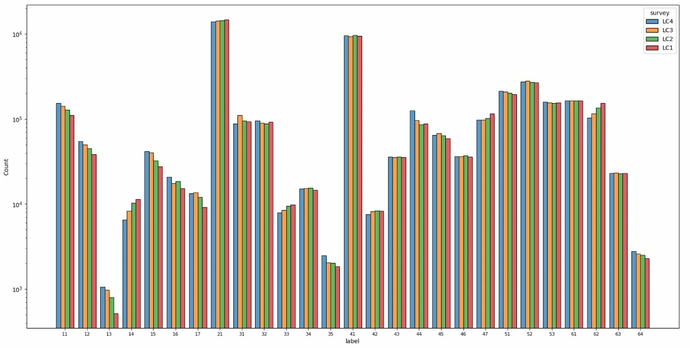
Figure 2: Land cover distribution plot.
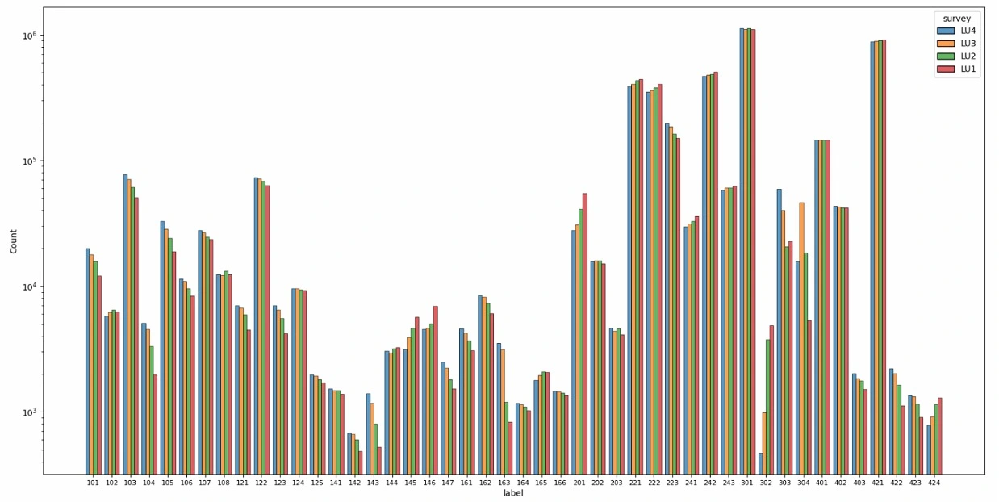
Figure 3: Land use distribution plot.
First, a glance at the overall distribution of land cover and land use is shown in Figure 2 and 3. The X-axis is the label of each class while the Y-axis is the number of tiles in the Log scale. The records of the four surveys are plotted in different colors chronologically. By observation, some trends can be found across the four surveys.
Artificial areas only take up a small portion of the land cover (labels between 10 to 20), while most surface of Switzerland is covered by vegetation or forest (20 - 50). Bare land (50 - 60) and water areas (60 - 70) take up a considerable portion as well. For land use, it is obvious that the agricultural (200 - 250) and forest (300 - 310) areas are the main components while the unused area (421) also stands out from others.
Most classes kept the same tendency during the past 40 years. There are 11 out of 27 land cover classes and 32 out of 46 land use classes which are continuously increasing or decreasing all the time. Especially for land use, compared with 10 classes rising with time, 22 classes dropping, which indicates that there is some transformation patterns that caused the leakage from some classes to those 10 classes. We will dive into these patterns in the following sections.
2.2 Quantity statistics¶
The data are explored in a quantitative way by three means:
- visualization of transformations between 2 surveys
- visualization of sequential transformation over time
- identifying patterns and most occured transformations in different periods.
2.2.1 Transformation visualization¶
Figure 4: Land cover transformation from 1985 to 2018.
The analysis of the transformation patterns in quantitative perspective has been implemented in the interactive visualization in Figure 4. The nodes of the same color belong to a common superclass (principle domain). The size of the node represents the number of tiles for the class and the width of the link reflects the number of transformations in log scale. When hanging over your mouse on these elements, detailed information such as the class label code and the number of transformations will be shown. Clicking the legend will enable you to select the superclasses in which the transformation should be analyzed.
Pre-processing had been done for the transformation data. To simplify the graph and stand out the major transformations, links with the number of transformations less than 0.1% of the total were removed from the graph. The filter avoids too many trivial links (580) connecting nearly all the nodes, leaving significant links (112) only. The process filtered 6.5% of the transformations in land cover and 11.5% in land use, which is acceptable considering it is a quantitative analysis focusing on the major transformation.
2.2.2 Sequential transformation visualization¶
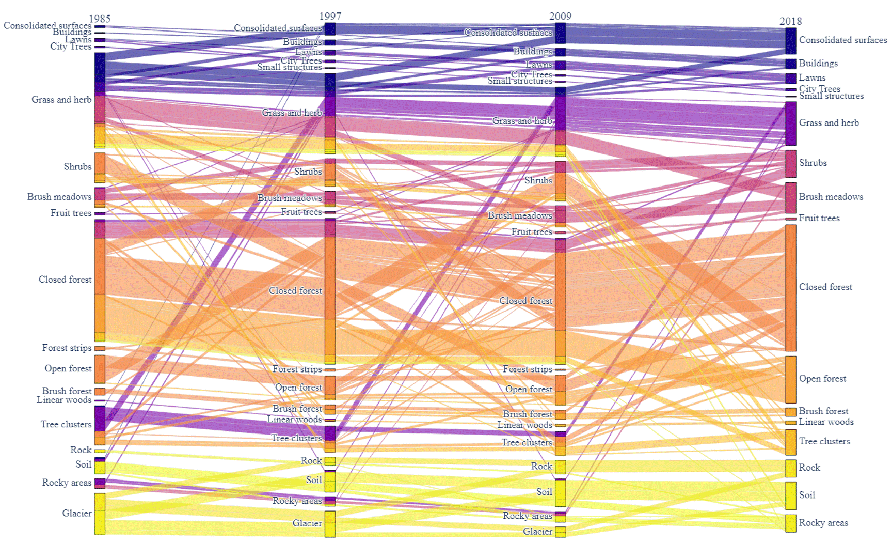
Figure 5: Land cover sequential transformation.
In addition to the transformation between the 2 surveys, the sequential transformation over time had also been visualized. Here, a similar filter is implemented as well to simplify the result and only tiles that had changed during the 4 surveys are visualized. In Figure 5, the box of a class in column 1985 (survey 1) is composed of different colors while the box of a class in column 2018 (survey 4) only has one color. This is caused by the color of the link showing a kind of sequential transformation. The different colors of a class in the first column show the end status (classification) of the tiles in survey 4.
There are some clear patterns we can find in the graph. For example, the red lines point out four diamond patterns in the graph. The diamond pattern with the edges in the same color illustrates the continuous trend that one class of tiles is transferred to the other class. In this figure, it is obvious that the Tree Clusters are degraded to the Grass and Herb, while Grass and Herb are transferred to the Consolidated Surfaces, showing the expansion of urban areas and the destruction to the natural environment.
2.2.3 Quantity statistics analysis¶
Comparing the visualization of different periods, a constant pattern has been spotted in both land cover and land use. For example in land cover, the most transformation happened between the superclass of Tree Vegetation and Brush Vegetation. Also, a visible bi-direction transformation between Grass and Herb Vegetation and Clusters of Trees is witnessed. Greenhouses, wetlands and reedy marshes hardly have edges linked to them all over time, which illustrates that either they have a limited area or they hardly change.
A similar property can also be captured in land use classes. The most transformation happened inside the superclass of Arable and Grassland and Forest not Agricultural. Also, a visible transformation from Unused to Forest is highlighted by others.
Combining the findings above, it is clear that the transformation related to the Forest and Vegetation is the main part of the story. The forest shrinks or expands over time, changing to shrubs and getting back later. The Arable and Grassland keeps changing based on the need for agriculture or animal husbandry during the survey year. Different kinds of forests interconvert with each other which is a rational natural phenomenon.
2.3 Probability matrix¶
The above analysis demonstrates the occurrence of transformation with quantitative statistics. However, the number of tiles for different classes is not a uniform distribution as shown in the distribution analysis. The largest class is thousands of times more than the smallest one. Sometimes, the quantity of a transformation is trivial compared with the majority, but it is caused by the small amount of tiles for the class. Even if the negligible class would not have a significant impact on the performance of change detection, it is of great importance to reveal the internal transformation pattern of the land statistics and support the multi-class classification task. Therefore, the probability analysis is designed as below:
The probability analysis for land cover/use contains 3 parts:
- The probability matrix presents the probability of transformation from the source class (Y-axis) to the destination class (X-axis). The value of the probability is illustrated by the depth of the color in the log scale.
- The distribution of the probability that a class does not change, which is a more detailed visualization of the diagonal value of the probability matrix.
- The distribution of the maximum probability that a class changes to another certain class. This is a deeper inspection to look for a fixed transformation pattern that exists between two classes.
The probability is calculated by the status change between the beginning survey and the end survey stated in the figure title. For example Figure 6 is calculated by the transformation between survey 1 and survey 4, without taking into account possible intermediate changes in survey 2 and 3.
2.3.1 Land cover analysis¶
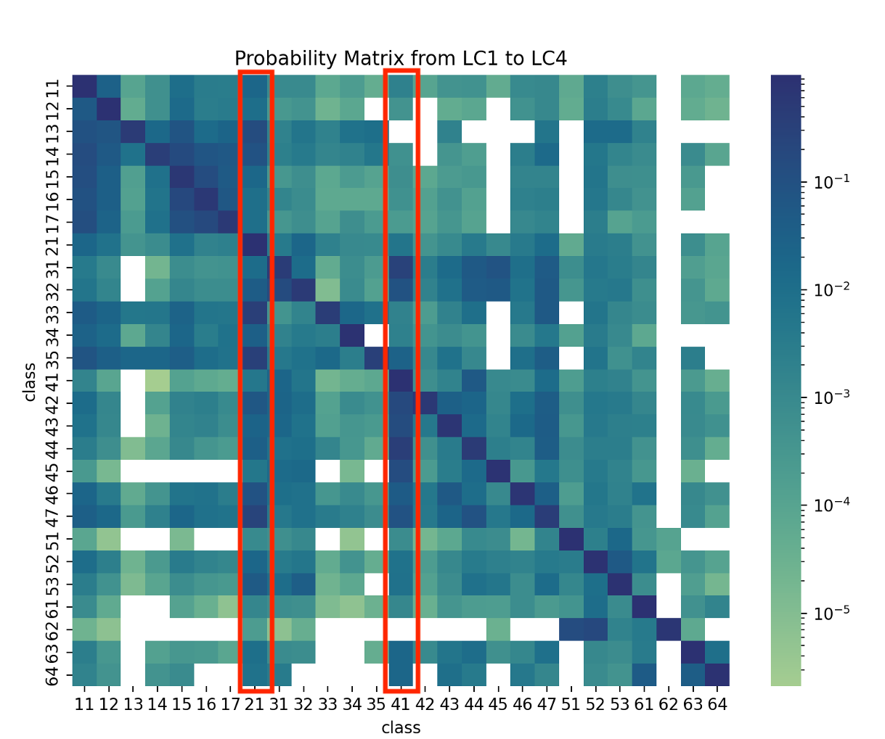
Figure 6: Land cover probability matrix from LC1 to LC4.
The first information that the matrix provides is the blank blocks with zero probability of conversion. This discloses that transformation between some classes had never happened during the past four decades. Besides, all the diagonal blocks are with distinct color depth, illustrating that all classes of land cover are most likely to keep their status rather than to change.
Another evident features of this matrix are the columns with destination classes Grass and Herb Vegetation (21) and Closed Forest (41). There are a few classes such as Shrubs (31), Fruit Tree (33), Garden Plants (35) and Open Forest (44) which have a noticeable trend to convert to these two classes, which is partially consistent with the quantity analysis while revealing some new findings.
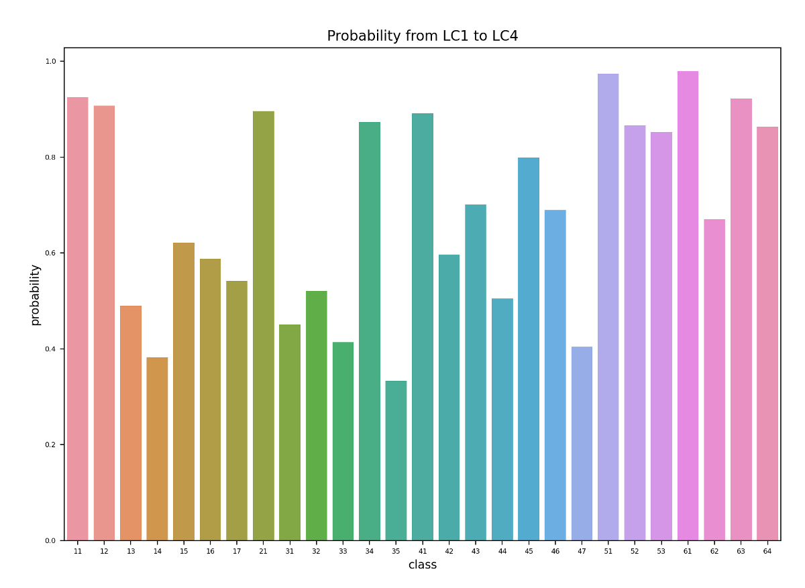
Figure 7: Land cover transformation probability without change.
When it comes to the refined visualization of the diagonal blocks, it is clear that half of the classes have more than an 80% probability of not transforming, while the minimum one only has about 35%. This is caused by the accumulation of the 4 surveys together which lasts 40 years. For a single decade, as the first 3 sub-graphs of Figure 23 in the Appendix A2.1, the majority are over 90% probability and the minimum rises to 55%.
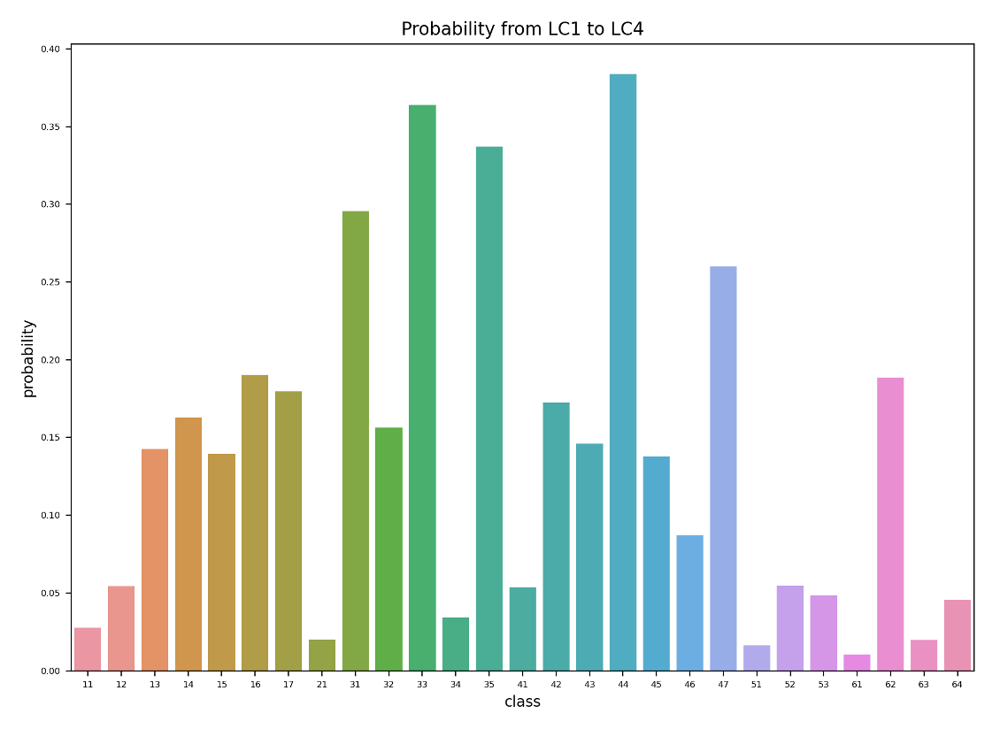
Figure 8: Maximum transformation probability to a certain class when land cover changes.
For those transformed tiles, the maximum probability of converting into another class is shown in Figure 8. This graph together with the matrix in Figure 6 can point out the internal transformation pattern. The top 5 possible transformations between the first survey and the forth survey are:
1. 38% Open Forest (44) --> Closed Forest (41)
2. 36% Brush Meadows (32) --> Shrubs (31)
3. 34% Garden Plants (35) --> Grass and Herb Vegetation (21)
4. 29% Shrubs (31) --> Closed Forest (41)
5. 26% Cluster of Tree (47) --> Grass and Herb Vegetation (21)
In this case, the accumulation takes effect as well. For a single decade, the maximum probability decreases to 25%, but the general distribution of the probability is consistent between the four surveys according to Figure 24 in the Appendix A2.1.
2.3.2 Land use analysis¶
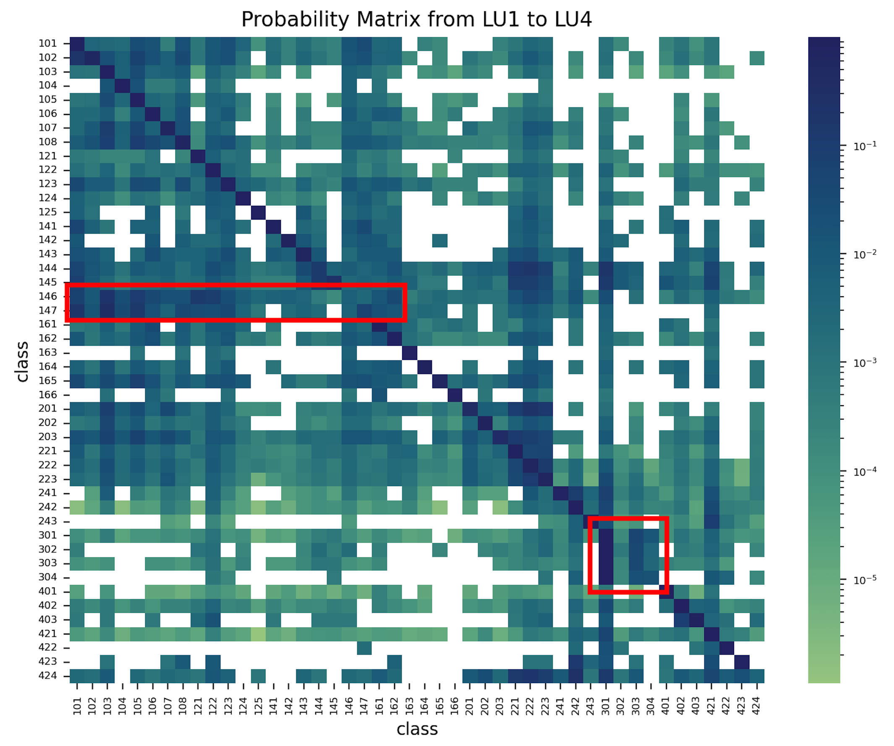
The land use probability matrix has different features compared with the land cover probability matrix. Although most diagonal blocks are with the deepest color depth, there are two areas highlighted by the red line presenting different statistics. The upper area is related to Construction sites (146) and Unexploited Urban areas (147). These two classes tend to change to other classes rather than keep unchanged, which is reasonable since the construction time of buildings or infrastructures hardly exceeds 10 years. This is confirmed by the left side of the red-edged rectangular block, which has a deeper color depth. This illustrates that construction and unexploited areas ended in the Settlement and Urban Areas (superclass of 100 - 170).
The lower red area account for the pattern concerning the Forest Areas (301 -304). The Afforestation (302), Lumbering areas (303) and Damaged Forest (304) would thrive and recover between the surveys, and finally become Forest (301) again.
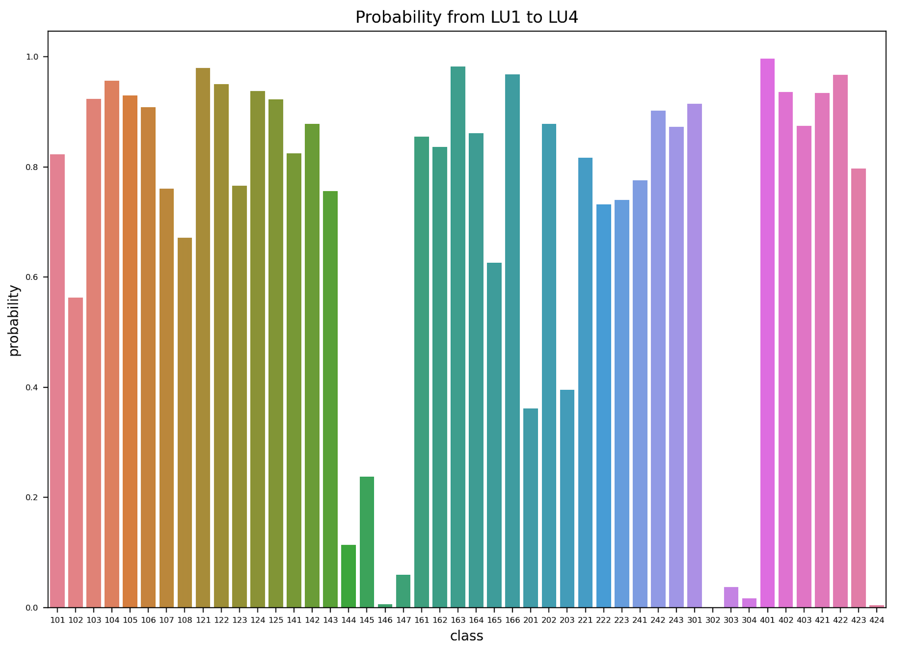
Figure 10: Land use transformation probability without change.
Figure 10 further validates the assumptions. With most classes with a high probability of not changing, there are two deep valleys for classes 144 to 147 and 302 to 304, which are exactly the results of the stories mentioned above.

Figure 11: Maximum transformation probability to a certain class when land use changes.
Figure 11 tells the difference in the diversity of transformation destination. The construction and unexploited areas would turn into all kinds of urban areas, with more than 95% changed and the maximum probability to a fixed class is less than 35%. While the Afforestation, Lumbering areas and Damaged Forest returned to Forest with a probability of more than 90%, the transformation pattern within these four classes is fairly fixed.
The distribution statistics, the quantity statistics and the probability matrices have shown to validate and complement each other during the exploratory analysis of the data.
3. Methods¶
The developed method should be integrated in the OFS framework for change detection and classification of land use and land cover illustrated in Figure 12. The interesting parts for this project are highlighted in orange and will be presented in the following.
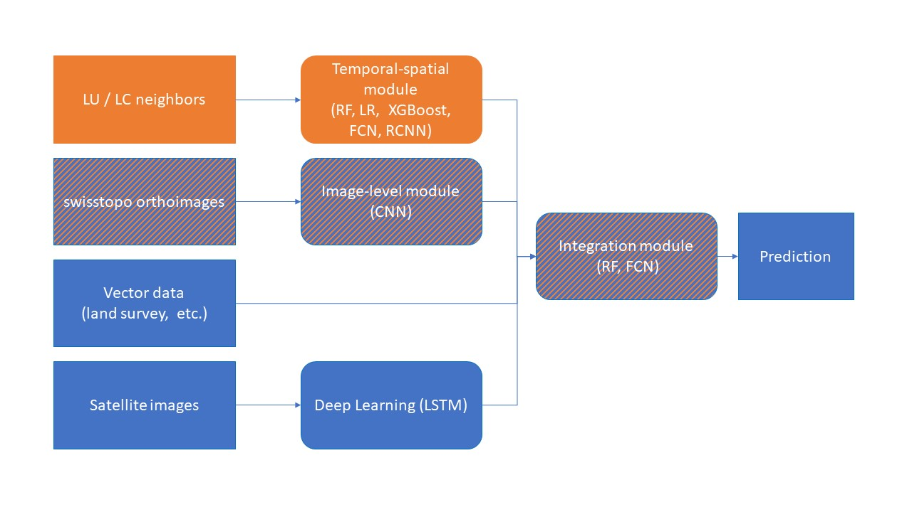
Figure 12: Planned structure in FSO framework for final prediction.
Figure 12 shows on the left the input data type in the OFS framework. The current project work on the LC/LU neighbors introduced in Section 1.3. The main objective of the project - to detect change by means of these neighbors - is the temporal-spatial module in Figure 12.
As proposed by the feasibility study, FSO had implement studies on change detection and multi-class classification on swisstopo aerial images time series to accelerate the efficiency of the interpretation work. The predicted LC and LU probabilities and information obtained by deep learning are defined as the image-level module.
In a second stage of the project, the best model for combining the temporal-spatial and the image-level module outputs is explored to evaluate the gain in performance after integration of the spatial-temporal module in the OFS framework. This is the so-called integration module. The rest of the input data will not be part of the performance evaluation.
3.1 Temporal-spatial module¶
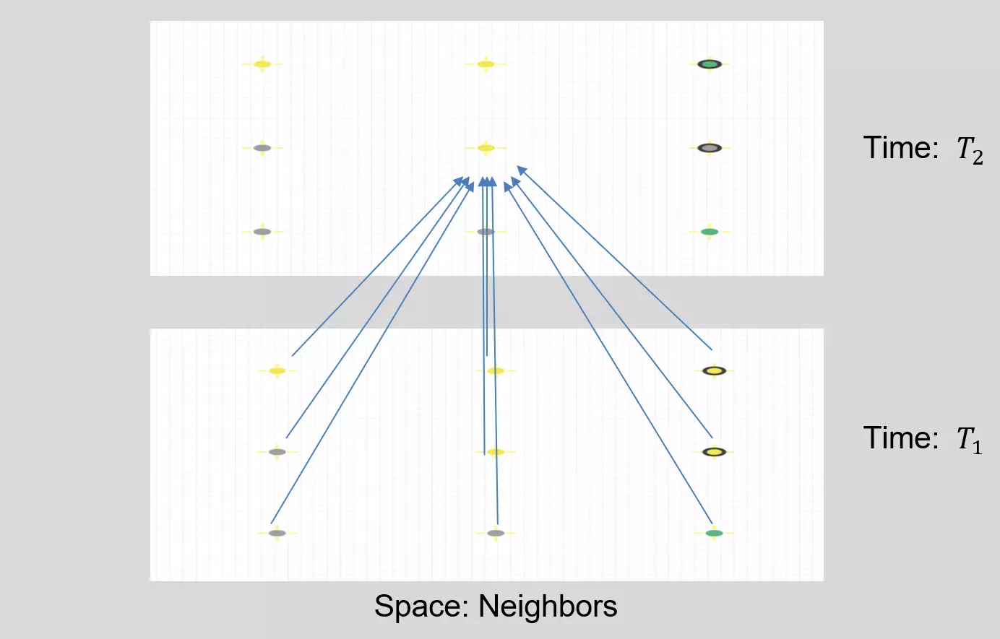
Figure 13: Time and space structure of a tile and its neighbors.
The input data to the temporal-spatial module will be the historical interpretation results of the tile to predict and its 8 neighbors. The first three surveys are used as inputs to train the models while the forth survey serves as the ground truth of the prediction. This utilizes both the time and space information in the dataset like depicted in Figure 13.
During the preprocessing, the tiles with missing neighbors were discarded from the dataset to keep the data format consistent, which is insignificant (about 400 out of 348'868). The determination of change is influenced by both land cover and land use. When there is a disparity between the classifications in the fourth survey and the third one for a specific tile, it is identified as altered (positive) in change detection. The joint prediction of land cover and land use is based on the assumption that a correlation may exist between them. If the land cover of a tile undergoes a change, it is probable that its land use will also change.
Moreover, the tile is assigned numerical labels. Nevertheless, the model does not desire a numerical association between classes, even when they belong to the same superclass and are closely related. To address this, we employ one-hot encoding, which transforms a single land cover column into 26 columns, with all values set to '0' except for one column marked as '1' to indicate the class. Despite increasing the model's complexity with almost two thousand input columns, this is a necessary trade-off to eliminate the risk of numerical misinterpretation.
3.2 Change detection¶
Usually, spatial change detection is a remote sensing application performed on aerial or satellite images for multiclass change detection. However, in this project, a table of point records is used for binary classification into changed and not changed classes. Different traditional and new deep learning approach have been explored to perform this task. The motivations to use them are given hereinafter. An extended version of this section with detailed introduction to the machine learning models is available in Appendix A3.
Three traditional classification models, logistic regression (LR), XGBoost and random forest (RF), are tested. The three models represent the most popular approaches in the field - the linear, boosting, and bagging models. In this project, logistic regression is well adapted because it can explain the relationship between one dependent binary variable and one or more nominal, ordinal, interval or ratio-level independent variables. Concerning XGBoost, it has the advantage that weaker classifiers are introduced sequentially to focus on the areas where the current model is struggling, while misclassified observations would receive extra weight during training. Finally, in random forest, higher accuracy may be obtained and overfitting still avoided through the larger number of trees and the sampling process.
Beyond these traditional popular approaches, another two deep learning algorithms are explored as well: fully connected network and convolutional recurrent neural network. Different from the traditional machine learning algorithms, deep learning does not require manual feature extraction or engineering. Deep neural networks capture the desired feature with back-propagation optimization process. Besides, these deep neural networks have some special design for temporal or spatial inputs, because it is assumed that the internal pattern of the dataset would match with the network structure and the model will have better performance.
3.2.1 Focal loss¶
Deep neural networks need differentiable loss function for optimization training. For this project with imbalanced classification task, the local loss was chosen rather than the traditional (binary) cross entropy loss.
where \(p_t\) is the probability of predicting the correct class, \(\alpha\) is a balance factor between positive and negative classes, and \(\gamma\) is a modulation factor that controls how much weight is given to examples hard to classify.
Focal loss is a type of loss function that aims to solve the problem of class imbalance in tasks like classification. Focal loss modifies the cross entropy loss by adding a factor that reduces the loss for easy examples and increases the loss for examples hard to classify. This way, focal loss focuses more on learning from misclassified examples. Compared with other loss functions such as cross entropy, binary cross entropy and dice loss, some advantages of focal loss are:
- it can reduce the dominance of well-classified examples and prevent them from overwhelming the gradient
- it can adaptively adjust the weight of each example based on its difficulty level
- it can improve the accuracy and recall of rare classes by adjusting \(\alpha\) to give more weight to them
\(\alpha\) should be chosen based on the class frequency. A common choice is to set \(\alpha_t\) is 1 minus the frequency of class t. This way, rare classes get more weight than frequent classes. \(\gamma\) should be chosen based on how much you want to focus on hard samples. A larger gamma means more focus on hard samples, while a smaller gamma means less focus. The original paper suggested that a gamma equal to 2 is an effective value for most cases.
3.2.2 Fully connected network (FCN)¶
Fully connected network (FCN) in deep learning is a type of neural network that consists of a series of fully connected layers. The major advantage of fully connected networks for this project is that they are structure agnostic. That is, no special assumptions need to be made about the input (for example, that the input consists of images or videos).
A disadvantage of FCN is that it can be very computationally expensive and prone to overfitting due to the large number of parameters involved. Another disadvantage is that it does not exploit any spatial or temporal structure in the input data, which can lead to poor performance for some tasks.
For implementation, the FCN employ 4 hidden layers (2048, 2048, 1024, 512 neurons respectively) besides the input and output layer. Relu activation function are chosen before the output layer while sigmoid function is applied at the end to scale the result to probability representation.
3.2.3 Convolutional recurrent neural network (ConvRNN)¶
Convolutional recurrent neural network (ConvRNN) is a type of neural network that combines convolutional neural networks (CNNs) and recurrent neural networks (RNNs). CNNs are good at extracting spatial features from images, while RNNs are good at capturing temporal features from sequences. ConvRNNs can be used for tasks that require both spatial and temporal features as it is meant to be achieved in this project. Furthermore, the historical data of the land cover and land use can be translated to some synthetic images. The synthetic images use channels to represent sequence of surveys and the pixel value represents ground truth label. Thus, the spatial relationship of the neighbour tiles could be extracted from the data structure with the CNN.
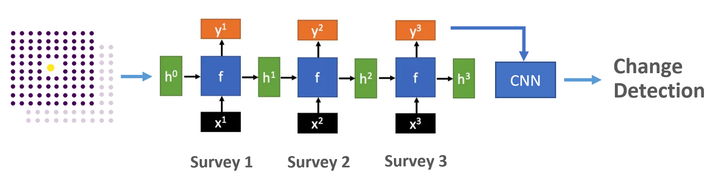
In this project, we explored ConvRNN with structure shown in Figure 14. The sequence of surveys are treated as sequence of input \(x^t\). With the recurrent structure and hidden states \(h^t\) to transmit information, the temporal information could be extracted. Different from the traditional RNN, the function \(f\) in hidden layers of the recurrent structure use convolutional operation instead of matrix computation and an additional CNN module is applied to the sequence output to detect the spatial information.
3.3 Performance metric¶
Once the different machine learning models are trained for the respective module, comparison has to be made on the test set to evaluate their performance. This will be performed with the help of metrics.
3.3.1 Traditional metrics¶
As discovered in the distribution analysis, the dataset is strongly unbalanced. Some class is thousands of others. This is of importance to change detection. Moreover, among 348'474 tiles in the dataset, only 58'737 (16.86%) tiles have changed. If the overall accuracy is chosen as the performance metric, the biased distribution would make the model tend to predict everything unchanged. In that case, the accuracy of the model can achieve 83.1%, which is a quite high value achieved without any effort. Therefore, avoiding the problem during the model training and selecting the suitable metric that can represent the desired performance are the initial steps.
The constant model is defined as a model which predicts the third survey interpretation values as the prediction of the forth survey. In simple words, the constant model predicts that everything does not change. By this definition, we can calculate all kinds of metrics for other change detection models and compare them to the constant model metrics to indentify models with better performance.
For change detection with the constant model, the performance is as below:
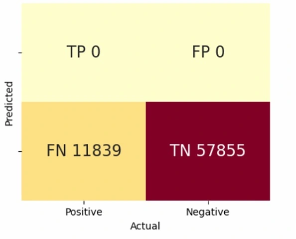
Figure 15: Confusion matrix of constant distribution as prediction: TP=True Positive, TN=True Negative, FP=False Positive, FN=False Negative.
| Models | Accuracy | Balanced Accuracy | Precision (PPV/NPV) | Recall (TPR/TNR) | F1-score | |
|---|---|---|---|---|---|---|
| Constant | 0.831 | 0.500 | Positive Negative |
0.000 0.831 |
0.000 1.000 |
0.000 0.907 |
Definition of abbreviations:
For positive case:
Precision = TP / (TP + FP) Recall = TP / (TP + FN)
(Positive predictive value, PPV) (True positive rate, TPR)
For negative case:
Precision = TN / (TN + FN) Recall = TN / (TN + FP)
(Negative predictive value, NPV) (True negative rate, TNR)
- Detailed metrics definition can be found here
The aim of the change detection is to predict the tiles of high confidence that do not change, so that the interpretation from the last survey can be used directly. However, the negative-case-related metrics above and the accuracy are not suitable for the present task because of the imbalance nature of the problem. Indeed, they indicate a high performance for the constant model, which we know is not depicting the reality, because of the large amount of unchanged tiles. After the test, the balanced accuracy which is the mean of the true positive rate and the true negative rate is considered a suitable metric for change detection.
3.3.2 Specific weighted metric for change detection¶
In theory, true negative rate is equivalent to 1 minus false positive rate. Optimizing balanced accuracy typically results in minimizing the false positive rate. However, our primary objective is to reduce false negative instances (i.e., changed cases labeled as unchanged), while maximizing the true positive rate and true negative rate. False positives are of lesser concern, as they will be manually identified in subsequent steps. Consequently, balanced accuracy does not adequately reflect the project's primary objective. With the help of FSO interpretation team, an additionnal, specific metric targeting on the objective has been designed to measure the model performance. Reminding the Exploratory Data Analysis, some transformation patterns have been found and applied in this metric as well.
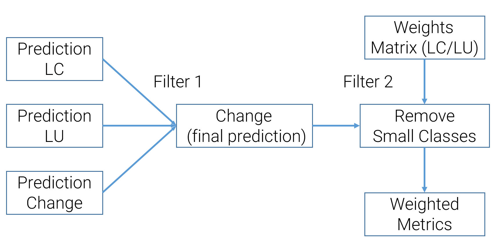
Figure 16: Workflow with multiple input to define a weighted metric.
As depicted in Figure 16, the FSO interpretation team designed two filters to derive a custom metric. The first filter combines inputs from all the possible modules (in this case, the image-level and temporal-spatial modules). The input modules give the probability of change detection or multi-class classification prediction with confidence. As prediction from modules might be different, the first filter will set the final prediction of a tile as positive if any input module gives a positive prediction. Here the threshold to define positive is a significant hyperparameter to finetune.
The Weights Matrix defined by the human experts is the core of the entire metric. Based on professional experience and observation of EDA, the experts assigned different weights to all possible transformations. These weights demonstrate the importance of the transformation to the overall statistics. Besides, part of the labels is defined as Small Classes, which means that these classes are negligible or we do not consider them in this study. The second filter removes all the transformations related to the small classes and apply the weights matrix to all the remained tiles. Finally, the weighted metric is calculated as below:
From now on, we will still calculate metrics like balanced accuracy and recall for reference and analysis; however, the Weighted Metric is the decisive metric for model selection.
3.4 Training and testing plan¶
Introduced in Section 1.3, the 348'474 tiles with temporal-spatial information are selected for training. The 80%-20% split is applied to the selected tiles to create the train set and the test set respectively. Adam optimizer and multi-step learning rate scheduler are deployed for better convergence.
For the temporal-spatial module, metrics for ablation study on the descriptors and descriptor importance are first computed. The descriptor importance is taken from XGBoost simulations. The ablation study is performed with the logistic regression and consists of training the model with:
- 8 neighbors and time activated, "baseline"
- 4 neighbors (northern, western, southern, eastern neighbors)
- no spatial-neighbors, "space deactivate"
- no temporal-neighbors, "time deactivate"
Then, the baseline configuration is used to trained the traditional algorithms and the deep learning ones. Metrics are compared and the best performing models are kept for the integration module.
Finally, the performance of several configurations are compared for the integration module.
- direct outputs of the image-level module
- direct outputs of the best performing temporal-spatial module
- outputs of the best performing temporal-spatial module, followed by RF training for the integration module.
- outputs of the best performing temporal-spatial module, followed by FCN training for the integration module.
The extra information gain from the temporal-spatial module will be studied by comparison with image-level performance only. The image-level data contain multi-class classification prediction and its confidence. We can calculate the change probability according to the probability of each class. Therefore, the weighted metric can also be applied at the image-level only. Then, the RF and FCN are tested for the integration module which combines various types of information sources.
4. Experiments¶
The Experiments section covers the results obtained when performing the planned simulations for the temporal-spatial module and the integration module.
4.1 Temporal-spatial module¶
4.1.1 Feature engineering (time and space deactivation)¶
In the temporal-spatial module, the studied models take advantages of both the space (the neighbors) and the time (different surveys) information as introduced in Section 3.1. Ablation study is performed here to acknowledge the feature importance and which information really matters in the model.
| Logistic Regression | Best threshold | Accuracy | Balanced Accuracy | Precision (PPV/NPV) | Recall (TPR/TNR) | F1-score | |
|---|---|---|---|---|---|---|---|
| Time deactivate | 0.515 | 0.704 | 0.718 | Positive Negative | 0.330 0.930 |
0.740 0.696 |
0.457 0.796 |
| Space deactivate | 0.505 | 0.684 | 0.711 | Positive Negative | 0.316 0.930 |
0.752 0.670 |
0.445 0.779 |
| 4 neighbors | 0.525 | 0.707 | 0.718 | Positive Negative | 0.332 0.929 |
0.734 0.701 |
0.458 0.799 |
| Baseline* | 0.525 | 0.711 | 0.720 | Positive Negative | 0.337 0.928 |
0.734 0.706 |
0.462 0.802 |
*Baseline: 8 neighbors with time and space activated
Table 3 reveals the performance change when time or space information is totally or partially (4-neighbors instead of 8-neighbors) deactivated. While time deactivation and less-neighbors hardly have an influence on the balanced accuracy (only 0.2% decrease), the one for space deactivation decreased by about 1%. The result demonstrates that space information is more vital to the algorithm than time information, even though both have a minor impact.
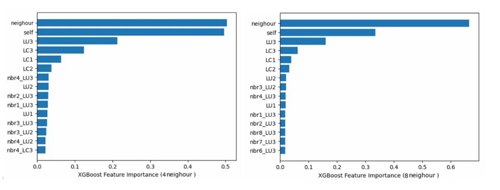
Figure 17: Feature importance analysis comparasion of 4 (left) and 8 (right) neighbors.
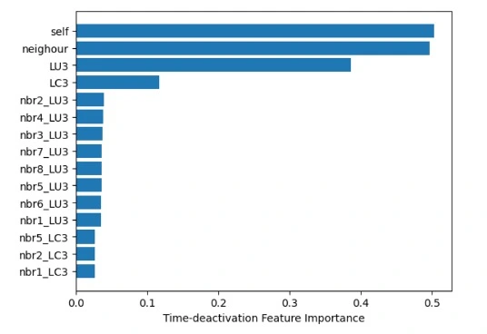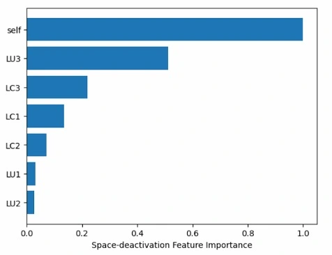
Figure 18: Feature importance analysis comparasion of time (left) and space (right) deactivation.
Figure 17 and 18 give the feature importance analysis from the XGBoost model. The sum of feature importance from variables all related to the tile itself and its neighbors are plotted in the charts. The 4-neighbor and 8-neighbor have similar capacities but the importance of neighbors for the latter is much more than for the former. This is caused by the number of variables. With more neighbors, the number of variables related to the neighbor increases and the sum of the feature importance grows as well.
The feature importance illustrates the weight assigned to the input variables. From Figure 17, it is obvious that the variable related to the tile itself from past surveys is the most critical. Furthermore, the more recent, the more important. The neighbor on the east and west (neighbors 3 and 4) are more significant than others and even more than the land use of the tile in the first survey.
In conclusion, the feature importance is not evenly distributed. However, the ablation study shows that the model with all the features as input achieved the best performance.
4.1.2 Baseline models with probability or tree models¶
Utilizing the time and space information from the neighbors, three baseline methods with probability or tree model are fine-tuned. The logistic regression outperforms the other two, achieving 72.0% balanced accuracy. As result, more than 41'000 tiles are correctly predicted as unchanged while only about 3'000 changed tiles are missed as they are the false negatives. Detailed metrics of each method are listed in Table 4.
| Models | Accuracy | Balanced Accuracy | Precision (PPV/NPV) | Recall (TPR/TNR) | F1-score | |
|---|---|---|---|---|---|---|
| Logistic Regression | 0.711 | 0.720 | Positive Negative |
0.337 0.928 |
0.734 0.706 |
0.462 0.802 |
| Random Forest | 0.847 | 0.715 | Positive Negative |
0.775 0.849 |
0.134 0.992 |
0.229 0.915 |
| XGBoost | 0.837 | 0.715 | Positive Negative |
0.533 0.869 |
0.297 0.947 |
0.381 0.906 |
| Constant | 0.830 | 0.500 | Positive Negative |
0.000 0.830 |
0.000 1.000 |
0.000 0.907 |
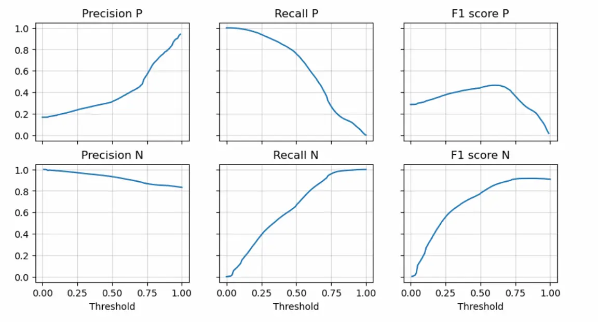
21: Metric changes with different threshold for logistic regression.
Besides the optimal performance with balanced accuracy, logistic regression can manually adjust its ability by changing the decision threshold as its output is the probability to change instead of prediction only. For example, we can trade off between the true positive rate and the negative predictive value. As shown in Figure 19, if we decrease the threshold probability, the precision of the negative case (NPV) will increase while the true negative rate goes down. This means more tiles need manual checks; however, fewer changed tiles are missed. Considering both the performance and the characteristics, Logistic Regression is selected as the baseline model.
4.1.3 Neural networks: FCN and ConvRNN¶
FCN and ConvRNN work differently: FCN does not have special structure designed for temporal-spatial data while ConvRNN has specific designation for time and space information respectively. To study these two extreme situations, we explored their performance and compared with the logistic regression which is the best of the baseline models.
| Models | Weighted Metric | Raw Metric |
Balanced Accuracy | Recall | Missed Changes | Missed Changes Ratio |
Missed Weighted Changes | Missed Weighted Changes Ratio |
Automatized Points | Automatized Capacity |
|---|---|---|---|---|---|---|---|---|---|---|
| LR (Macro)* | 0.237 | 0.197 | 0.655 | 0.954 | 349 | 0.046 | 18995 | 0.035 | 14516 | 0.364 |
| LR (BA)* | 0.249 | 0.207 | 0.656 | 0.957 | 326 | 0.043 | 17028 | 0.031 | 14478 | 0.363 |
| FCN | 0.259 | 0.21 | 0.656 | 0.958 | 322 | 0.042 | 15563 | 0.029 | 14490 | 0.363 |
| ConvRNN | 0.176 | 0.133 | 0.606 | 0.949 | 388 | 0.051 | 19026 | 0.035 | 10838 | 0.272 |
| Constant | -10.717 | -10.72 | 0.500 | 0.000 | 7607 | 1.000 | 542455 | 1.00 | 47491 | 1.191 |
*Macro: the model is trained with Macro F1-score; BA: the model is trained with Balanced Accuracy.
As a result of its implementation (see Section 3.2.2), FCN outperforms all the models with a value of 0.259 for the weighted metric, slightly above the logistic regression with 0.249. ConvRNN does not perform well even if we have increased the size of hidden states to 1024. Following deliberation, we posit that the absence of one-hot encoding during the generation of synthetic images may be the cause, given that an increased number of channels could substantially explodes computational expenses. Since the ground truth label is directly applied to pixel values, the model may attempt to discern numerical relationships among distinct pixel values that, in reality, do not exist. This warrants further investigation in subsequent phases of our research.
4.2 Integration module¶
Table 5 compares the performance of FCN or image-level only to several configurations for the integration module.
| Model | Weighted Metric | Raw Metric |
Balanced Accuracy | Recall | Missed Changes | Missed Changes Ratio |
Missed Weighted Changes | Missed Weighted Changes Ratio |
Automatized Points | Automatized Capacity |
|---|---|---|---|---|---|---|---|---|---|---|
| FCN | 0.259 | 0.210 | 0.656 | 0.958 | 322 | 0.042 | 15563 | 0.029 | 14490 | 0.363 |
| image-level | 0.374 | 0.305 | 0.737 | 0.958 | 323 | 0.042 | 15735 | 0.029 | 20895 | 0.524 |
| LR + RF | 0.434 | 0.372 | 0.752 | 0.969 | 241 | 0.031 | 10810 | 0.020 | 21567 | 0.541 |
| FCN + RF | 0.438 | 0.373 | 0.757 | 0.968 | 250 | 0.032 | 11277 | 0.021 | 22010 | 0.552 |
| FCN + FCN | 0.438 | 0.376 | 0.750 | 0.970 | 229 | 0.030 | 9902 | 0.018 | 21312 | 0.534 |
| LR + FCN | 0.423 | 0.354 | 0.745 | 0.967 | 255 | 0.033 | 10993 | 0.020 | 21074 | 0.528 |
The study demonstrates that the image-level contains more information related to change detection compared with temporal-spatial neighbors (FCN row in the Table 5). However, performance improvement from the temporal-spatial module when combined with image-level data, achieving 0.438 in weighted metric in the end (FCN+RF and FCN+FCN).
Regarding the composition of different models for the two modules, FCN is proved to be the best one for the temporal-spatial module, while RF and FCN have similar performance in the integration module. The choice of integration module could be influenced by the data format of other potential modules. This will be further studied by the FSO team.
5. Conclusion and outlook¶
This project studied the potential of historical and spatial neighbor data in change detection task for the fifth interpretation process of the areal statistic of FSO. For the evaluation of this specific project, a weighted metric was defined by the FSO team. The temporal-spatial information was proved not to be as powerful as image-level information which directly detects change within visual data. However, an efficient prototype was built with 6% performance improvement in weighted metric combining the temporal-spatial module and the image-level module. It is validated that integration of modules with different source information can help to enhance the final capacity of the entire workflow.
The next research step of the project would be to modify the current implementation of ConvRNN. If the numerical relationship is removed from the synthetic image data, ConvRNN should have similar performance as FCN theoretically. Also, CNN is worth trying to validate whether the temporal pattern matters in this dataset. Besides, by changing the size of the synthetic images, we can figure out how does the number of neighbour tiles impact the model performance.
Appendix¶
A1. Classes of land cover and land use¶
Figure 20: Land Cover classification labels.
Figure 21: Land Use classification labels.
A2. Probability analysis of different periods¶
A2.1 Land cover¶
Figure 22: Land cover probability matrix.
Figure 23: Land cover transformation probability without change.
Figure 24: Maximum transformation probability to a certain class when land cover changes.
A2.2 Land use¶
Figure 25: Land use probability matrix.
Figure 26: Land use transformation probability without change.
Figure 27: Maximum transformation probability to a certain class when land use changes.
A3 Alternative version of Section 3.2¶
A3.1 Logistic regression¶
Logistic regression is a kind of Generalized Linear Model. It is the appropriate regression analysis to conduct when the dependent variable is dichotomous (binary). Like all regression analyses, logistic regression is a predictive analysis in this project. Logistic regression is used to describe data and to explain the relationship between one dependent binary variable and one or more nominal, ordinal, interval or ratio-level independent variables.
A3.2 XGBoost & random forest¶
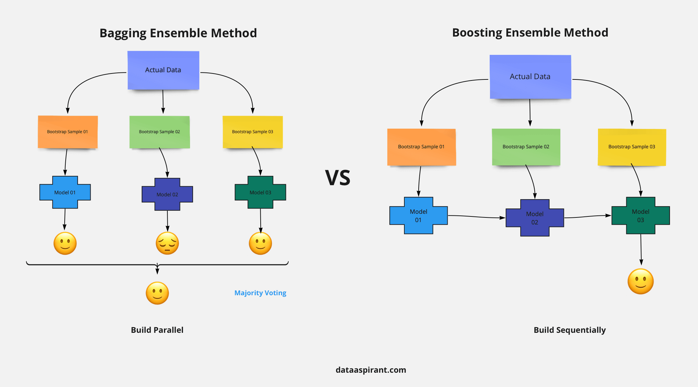
Figure 28: Comparison of boosting and bagging models.
XGBoost and Random Forest both originate from the tree model, while one is the sequential variant and the other is the parallel variant.
Extreme Gradient Boosting (XGBoost) is a distributed, scalable gradient-boosted decision tree (GBDT) machine learning algorithm. Gradient boosting is a flexible method used for regression, multi-class classification, and other tasks since it is compatible with all kinds of loss functions. It recasts boosting as a numerical optimization problem with the goal of reducing the loss function of the model by adding weak classifiers while employing gradient descent. Later, a first-order iterative approach, gradient descent, is used to find the local optimal of its differentiable function. Weaker classifiers are introduced sequentially to focus on the areas where the current model is struggling while misclassified observations would receive extra weight during training.
Random Forest is a bagging technique that contains a number of decision trees generated from the dataset. Instead of relying solely on one decision tree, it takes the average of a number of trees to improve the predictive accuracy. For each tree, the input feature is a different sampled subset from all the features, making the model more robust and avoiding overfitting. Then, these trees are trained with a bootstrapping-sampled subset of the dataset respectively. Finally, the random forest takes the prediction from each tree and based on the majority votes makes the final decision. Higher accuracy is obtained and overfitting is avoided through the larger number of trees and the sampling process.
A3.3 Focal loss¶
The next two methods are Deep Neural Networks which need differentiable loss function for optimization training. Here we first tell the difference between the loss function and evaluation metric.
The choice of loss function and evaluation metric depends on the task and data. The loss function should be chosen based on whether it is suitable for the model architecture and output type, while the evaluation metric should be relevant for the problem domain and application objectives.
The loss function and the evaluation metric are two different concepts in deep learning. The loss function is used to optimize the model parameters during training, while the evaluation metric is used to measure the performance of the model on a test set. The loss function and the evaluation metric may not be the same. For example, Here we use focal loss to train a classification model, but use balanced accuracy or specific defined metric to evaluate its performance. The reason for this is that some evaluation metrics may not be differentiable or easy to optimize, or they may not match with the objective of the model.
For this project with imbalanced classification task, we think the Focal Loss is a better choice than the traditional (binary) Cross Entropy Loss.
where p_t is the probability of predicting the correct class, \(\alpha\) is a balance factor between positive and negative classes, and \(\gamma\) is a modulation factor that controls how much weight is given to examples hard to classify.
Focal loss is a type of loss function that aims to solve the problem of class imbalance in tasks like classification. Focal loss modifies the cross entropy loss by adding a factor that reduces the loss for easy examples and increases the loss for examples hard to classify. This way, focal loss focuses more on learning from misclassified examples. Compared with other loss functions such as cross entropy, binary cross entropy and dice loss, some advantages of focal loss are:
- It can reduce the dominance of well-classified examples and prevent them from overwhelming the gradient.
- It can adaptively adjust the weight of each example based on its difficulty level.
- It can improve the accuracy and recall of rare classes by adjusting \(\alpha\) to give more weight to them.
\(\alpha\) should be chosen based on the class frequency. A common choice is to set \(\alpha_t\) = 1 - frequency of class t. This way, rare classes get more weight than frequent classes. \(\gamma\) should be chosen based on how much you want to focus on hard samples. A larger gamma means more focus on hard samples, while a smaller gamma means less focus. The original paper suggested gamma = 2 as an effective value for most cases.
A3.4 Fully connected network (FCN)¶

The fully connected network (FCN) in deep learning is a type of neural network that consists of a series of fully connected layers. A fully connected layer is a function from \(\mathbb{R}_m\) to \(\mathbb{R}_n\) that maps each input dimension to each output dimension. The FCN can learn complex patterns and features from data using backpropagation algorithm.
The major advantage of fully connected networks is that they are “structure agnostic.” That is, no special assumptions need to be made about the input (for example, that the input consists of images or videos). Fully connected networks are used for thousands of applications, such as image recognition, natural language processing, and recommender systems.
A disadvantage of FCN is that it can be very computationally expensive and prone to overfitting due to the large number of parameters involved. Another disadvantage is that it does not exploit any spatial or temporal structure in the input data, which can lead to poor performance for some tasks. A possible alternative to fully connected network is convolutional neural network (CNN), which uses convolutional layers that apply filters to local regions of the input data, reducing the number of parameters and capturing spatial features.
A3.5 Convolutional neural network (CNN)¶
CNN stands for convolutional neural network, which is a type of deep learning neural network designed for processing structured arrays of data such as images. CNNs are very good at detecting patterns in the input data, such as lines, shapes, colors, or even faces and objects. CNNs use a special technique called convolution, which is a mathematical operation that applies a filter (also called a kernel) to each part of the input data and produces an output called a feature map. Convolution helps to extract features from the input data and reduce its dimensionality.
CNNs usually have multiple layers of convolution, followed by other types of layers such as pooling (which reduces the size of the feature maps), activation (which adds non-linearity to the network), dropout (which prevents overfitting), and fully connected (which performs classification or regression tasks). CNNs can be trained using backpropagation and gradient descent algorithms.
CNNs are widely used in computer vision and have become the state of the art for many visual applications such as image classification, object detection, face recognition, semantic segmentation, etc. They have also been applied to other domains such as natural language processing for text analysis.
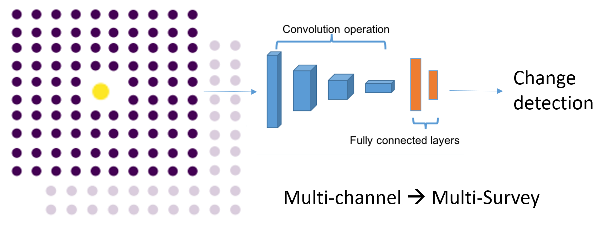
In this project, the historical data of the land cover and land use can be translated to some synthetic images. The synthetic images use channels to represent sequence of surveys and the pixel value represents ground truth label. Thus, the spatial relationship of the neighbour tiles could be extracted from the data structure with the CNN.
A3.6 Convolutional recurrent neural network (ConvRNN)¶
A convolutional recurrent neural network (ConvRNN) is a type of neural network that combines convolutional neural networks (CNNs) and recurrent neural networks (RNNs). CNNs are good at extracting spatial features from images, while RNNs are good at capturing temporal features from sequences. ConvRNNs can be used for tasks that require both spatial and temporal features, such as image captioning and speech recognition.
A ConvRNN consists of two main parts: a CNN part and an RNN part. The CNN part takes an input image or signal and applies convolutional filters to extract features. The RNN part takes these features as a sequence and processes them with recurrent units that have memory. The output of the RNN part can be a single vector or a sequence of vectors, depending on the task. A ConvRNN can learn both spatial and temporal patterns from data that have both dimensions, such as audio signals or video frames. For example, a ConvRNN can detect multiple sound events from an audio signal by extracting frequency features with CNNs and capturing temporal dependencies with RNNs.
In this project, we explored ConvRNN with structure shown in Figure 31. The sequence of surveys are treated as sequence of input \(x^t\). With the recurrent structure and hidden states \(h^t\) to transmit information, the temporal information could be extracted. Different from the traditional Recurrent Neural Network, the function \(f\) in hidden layers of the recurrent structure use Convolutional operation instead of matrix computation and an additional CNN module is applied to the sequence output to detect the spatial information.